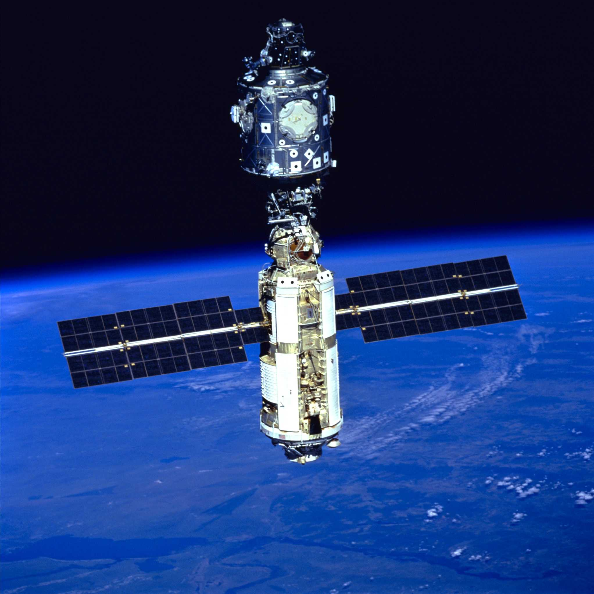

L'histoire de l'ISS
Le projet de la Station spatiale internationale (ISS), est un sujet fascinant qui combine des aspects de l'histoire,
de la géopolitique, de la technologie et de la coopération internationale. Pour comprendre d'où vient ce projet, nous devons remonter dans le temps et examiner son évolution.
Les origines
Les racines du projet ISS remontent à la guerre froide qui a opposé les États-Unis et l'Union soviétique après la Seconde Guerre mondiale. Cette période a été marquée par
une rivalité intense entre les deux superpuissances, y compris dans le domaine spatial. En 1957, l'Union soviétique a lancé le premier satellite artificiel, Spoutnik 1,
marquant le début de la course à l'espace.
La rivalité spatiale
Au cours des années qui ont suivi, les États-Unis et l'Union soviétique ont continué à lancer des satellites et à développer des technologies spatiales. Les Américains ont réussi
à envoyer les premiers humains sur la Lune en 1969 lors de la mission Apollo 11. Pendant ce temps, les Soviétiques ont lancé la première station spatiale habitée, appelée Saliout 1, en 1971.
La coopération naissante
Malgré cette rivalité, il y avait aussi une volonté croissante de coopération dans l'espace. Cela a conduit à des discussions entre les États-Unis et l'Union soviétique sur la possibilité
de travailler ensemble sur des missions spatiales. Ces pourparlers ont finalement abouti à un accord en 1972, connu sous le nom de Traité sur l'espace extra-atmosphérique, qui a jeté les
bases de la coopération internationale dans l'espace.
La création de l'ISS
Le projet de l'ISS a officiellement débuté dans les années 1990, après la fin de la guerre froide. Il s'agissait d'un effort international sans précédent qui a réuni les États-Unis,
la Russie, l'Europe, le Japon et le Canada, entre autres. La première pièce de l'ISS a été lancée en 1998, et depuis lors, la station a continué à s'agrandir et à accueillir des équipages
internationaux.
La rivalité spatiale
L'ISS est devenue un symbole de la coopération internationale dans l'espace. Les pays participants partagent non seulement les coûts du projet, mais aussi les ressources scientifiques et
les découvertes. Les équipages de l'ISS effectuent des expériences dans divers domaines scientifiques, notamment la biologie, la physique, la médecine, et bien plus encore. Ainsi, l'histoire
de l'ISS est celle d'une transformation, passant de la rivalité spatiale à une coopération internationale remarquable. Elle démontre comment les avancées technologiques et la diplomatie
peuvent s'unir pour créer des opportunités de recherche et de découverte dans l'espace, tout en favorisant la paix et la compréhension entre les nations. Ce projet continue de servir
d'exemple pour la manière dont l'humanité peut travailler ensemble pour repousser les frontières de l'exploration spatiale.
Sa chronologie
- Novembre 1998 : Le module russe Zarya est lancé en orbite pour servir de module de contrôle initial.
- Décembre 1998 : Le module américain Unity est lancé et attaché à Zarya, formant ainsi le noyau initial de la station.
- Juillet 2000 : L'équipage permanent de l'ISS commence à résider à bord, marquant le début des opérations à long terme.
- Octobre 2000 : Le premier équipage international de l'ISS, Expedition 1, arrive à bord.
- Novembre 2000 : Le premier module de laboratoire russe, Zvezda, est ajouté à la station.
- Avril 2001 : L'Agence spatiale européenne (ESA) envoie le laboratoire Columbus à l'ISS.
- 2007 : La NASA lance le module Harmony, qui sert de point de connexion pour les futurs laboratoires et modules.
- 2008 : Le module japonais Kibo est installé sur l'ISS.
- 2009 : Le module russe Mini-Research Module-2 (MRM-2) est ajouté à la station.
- 2010 : Le module russe Rassvet est attaché à l'ISS.
- 2011 : Le module Permanent Multipurpose Module (PMM) est ajouté par la NASA.
- 2018 : Le module russe Nauka est lancé et attaché à l'ISS, fournissant de nouveaux laboratoires et capacités.
- 2021 : Le module russe Prichal est lancé et attaché à la station en tant que module d'amarrage.
